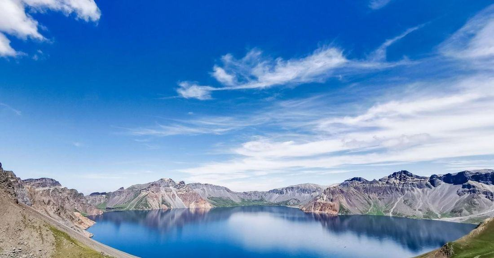
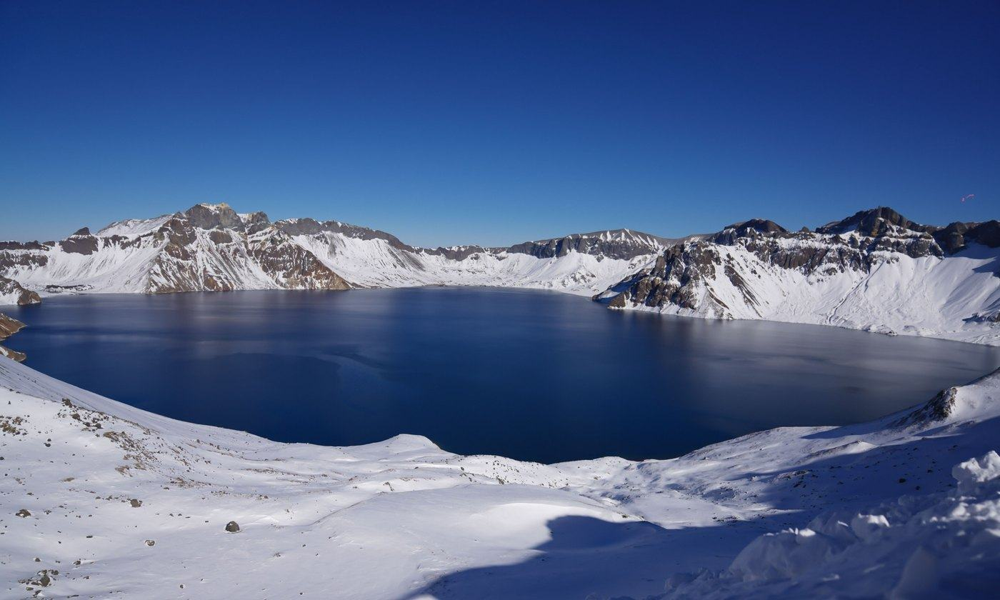
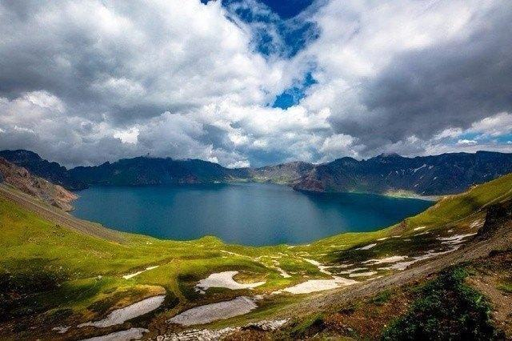
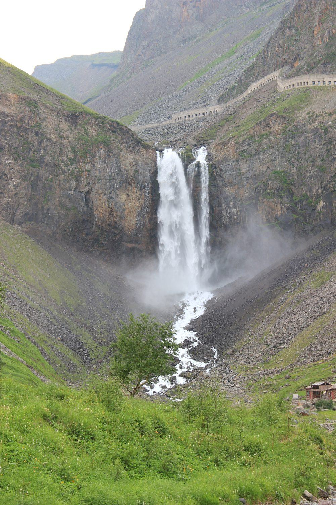
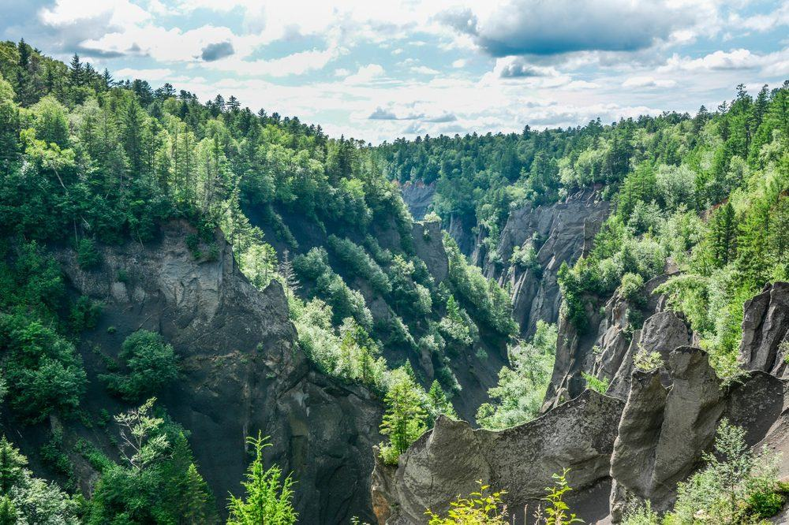
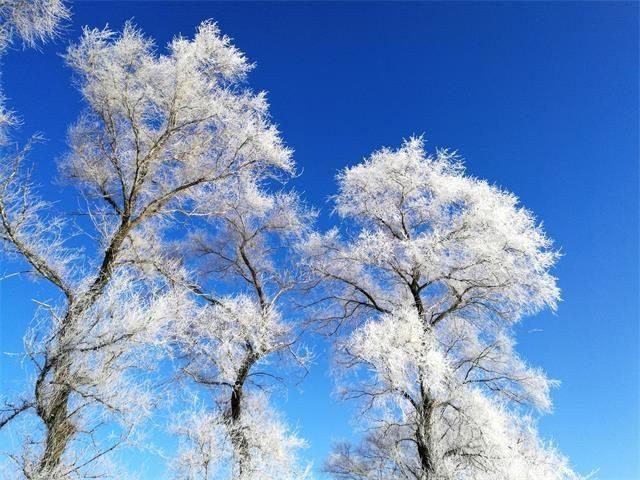
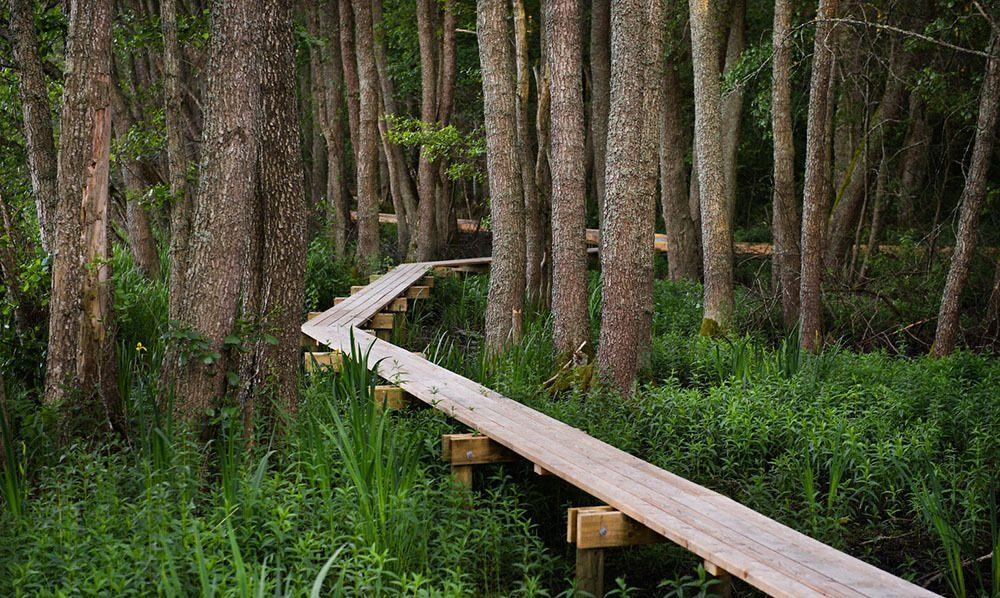
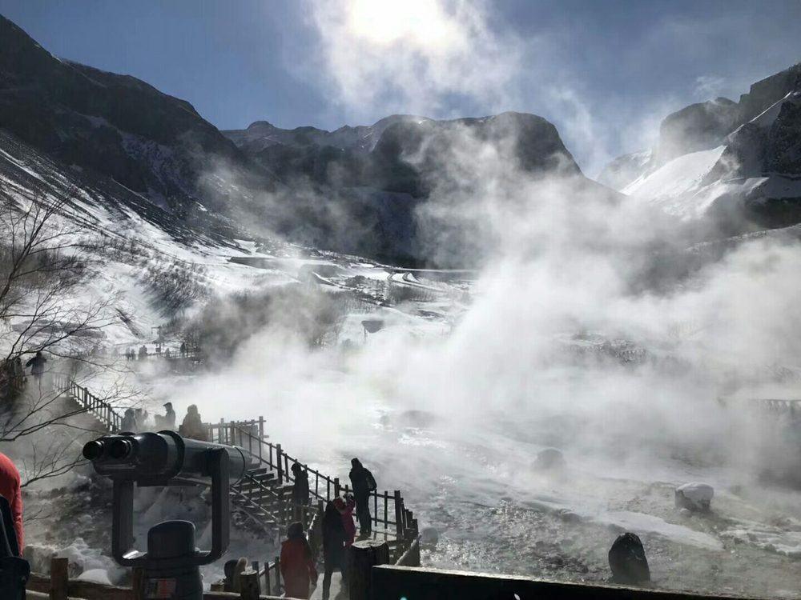
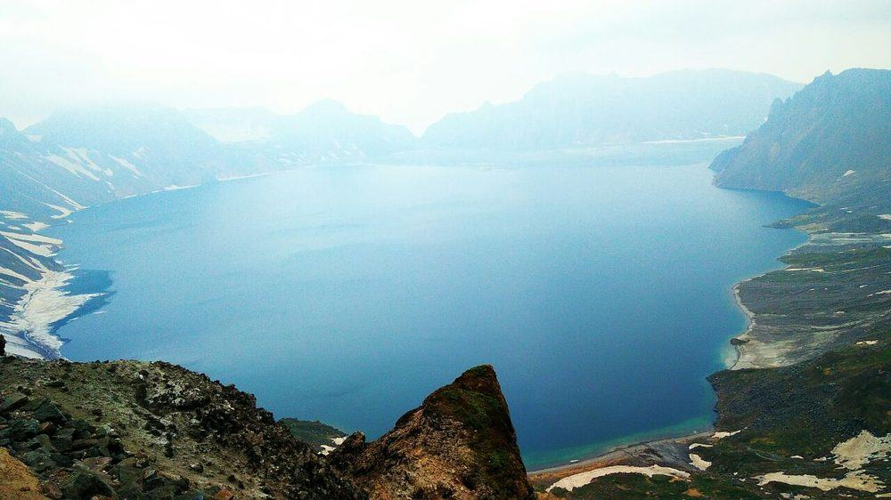

北坡 · 二道白河镇
景点最密集：天池主峰、长白瀑布、聚龙温泉、绿渊潭、小天池、谷底森林。有大巴和倒站越野车，步行最少。
- 入口：北景区游客集散中心（传奇小镇），长白山站公交 1 元或打车 15–20 元
- 体力：最低。登顶只走约 200 米，瀑布段有 206 级台阶
- 票价：295 元，含四段车费；现场不设售票窗口

01 / 山的样子
长白山不是一整座景区。山顶是天池，围绕它有三条各自独立的上山通道：北坡在二道白河方向，西坡在松江河方向，南坡在长白县方向。买票、到站、住宿全都跟着坡走。
北坡开发最早，景点最密，全程车接车送；西坡要爬 1442 级台阶，换一个无遮挡的天池全景；南坡只在夏季开放，离水面最近，最难抢票。







02 / 三个入口
最容易出错的一步不是选坡，而是买错站：去北坡买到「长白山站」，去西坡买到「长白山西站」。两站相距约 100 公里，坐错基本白跑半天。三个坡景区内部不相通。
景点最密集：天池主峰、长白瀑布、聚龙温泉、绿渊潭、小天池、谷底森林。有大巴和倒站越野车，步行最少。
看天池全景最开阔，还能看到中朝界碑。同一景区里有锦江大峡谷；冬季有粉雪谷，人少、有免费姜茶。

离天池水面最近，检票后小巴直达天池，还有岳桦双瀑、炭化木遗址、鸭绿江大峡谷。
| 对比项 | 北坡 | 西坡 | 南坡 |
|---|---|---|---|
| 看天池 | 观景台俯瞰，A / B 两条线 | 视野无遮挡，能看全貌 | 离水面最近 |
| 体力 | 低，车接车送 | 高，1442 级台阶 | 低，小巴直达 |
| 景点密度 | 最高：瀑布、温泉、绿渊潭、森林 | 中等：天池与大峡谷 | 最低 |
| 高铁站 | 长白山站（二道白河） | 长白山西站（松江河） | 无直达，需自驾或包车 |
| 适合谁 | 第一次来、带老人小孩 | 体力好、怕挤、爱拍照 | 夏季、想靠近水面 |
03 / 真实 3D 地形
卫星影像来自 Esri，山体起伏来自 Mapzen Terrarium 高程数据，点位用公开地图 POI 经纬度标注。拖动旋转、滚轮缩放、右键调俯仰；点任意圆点，展开小红书原帖摘录、好玩点和避雷点。
3D 地形需要联网加载卫星影像与高程瓦片。其余内容、路线和笔记仍可正常阅读。
04 / 多条路线
不是替你定行程，是六种别人实际走过的组合。点「在地图上看这条线」，3D 地图会画出这条路线并飞到对应视角。
05 / 住宿与车站
二道白河镇很小，全镇只有一个红绿灯，打车一般几分钟、价格个位数。真正要选的不是某一家酒店，而是住在镇中心还是集散中心附近。
热闹，美食和住宿选择最多，网红店基本都在这一片。旺季早上去景区不好打车时，可以坐公交。
比镇中心安静，以中档以上酒店为主，步行 10 分钟就能到集散中心，不用打车。代价是餐饮选择少。
雪场、温泉、酒店一体，适合把滑雪当主项目。但离二道白河约 2 小时车程，区域内打车贵、回程车难叫。
在二道白河镇，原名二道白河站。出站打车十几分钟到北坡游客集散中心，也可坐 1 路 / 3 路公交 1 元。站内别上楼，看到网约车标识继续往前走。
在松江河镇，服务西坡。站到西坡景区约 6.5 公里，出站就是镇子，吃饭住宿都方便。两站之间有高铁互通，约 20 分钟。
| 环节 | 怎么走 | 价格 / 时间 | 提醒 |
|---|---|---|---|
| 长春 → 长白山站 | C 字头城际动车 | 二等座 132 元 · 2h18–2h41 | 早班 06:52 发、09:22 到，能赶上山 |
| 延吉西 → 长白山站 | 高铁 | 二等座 75 元 · 约 1h40 | 延吉其实比长春更近长白山 |
| 长白山站 → 北坡集散中心 | 1 路 / 3 路公交，或打车 | 公交 1 元 / 打车 15–20 元 | 公交完全够用 |
| 景区内 | 大巴约 50 分钟 → 换乘中心 → 小巴上主峰 | 环保车 85 + 倒站车 80 | 排队和车程会吃掉大半天 |
| 两站互通 | 长白山站 ↔ 长白山西站高铁 | 约 20 分钟，票价以 12306 为准 | 两天各玩一坡就靠这一段 |
| 区域打车 | 万达 / 西坡一带多为出租车 | 15 分钟约 40 元 | 网约车基本叫不到，建议提前约车 |
06 / 笔记来源
从 43 篇长白山笔记与本轮补抓的 32 篇住宿、车站、路线笔记里挑出的高赞代表。同一地点评价相反时，两边都保留，不替你下结论。
「西坡视野开阔，观景台是个大平台，总能挤到前排好好拍张全景。」
「粉雪谷人很少而且很漂亮，景区还有免费的姜茶。」
「二道白河小镇太好逛了，足足可以玩一天。」
「天池冬天开的几率非常小，真没必要这个天气来赌运气。」
「一个破水塘子围起来就叫小天池了。」
「云顶天宫里面就只有做工粗糙的一个雪雕，旁边竖着几个黑色大音响超级吵。」